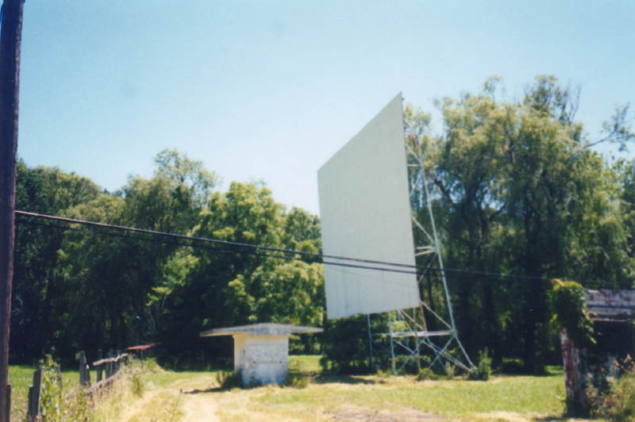
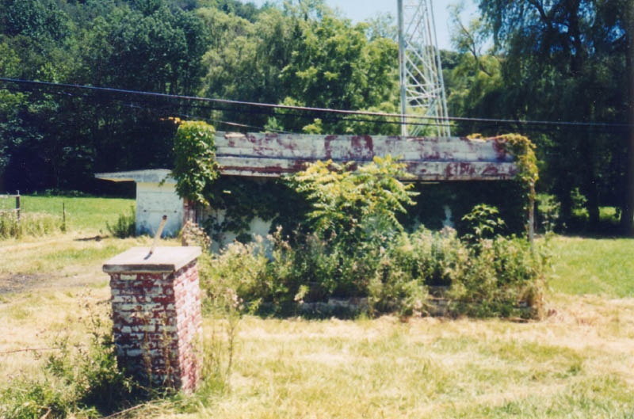
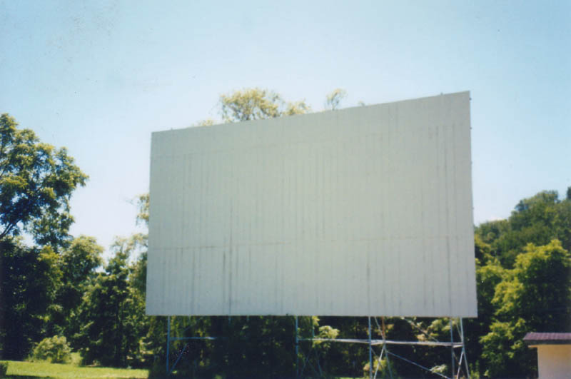
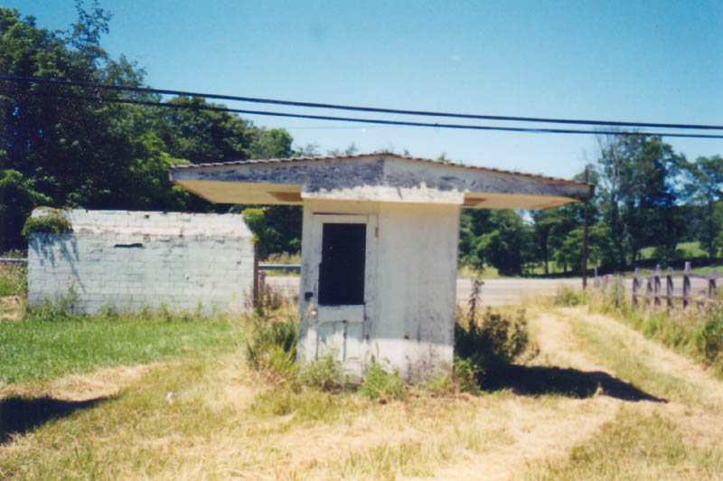
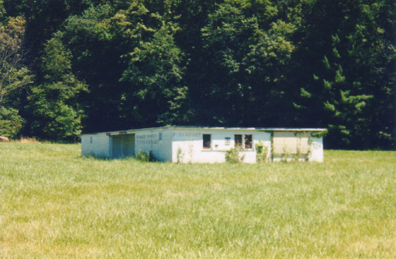
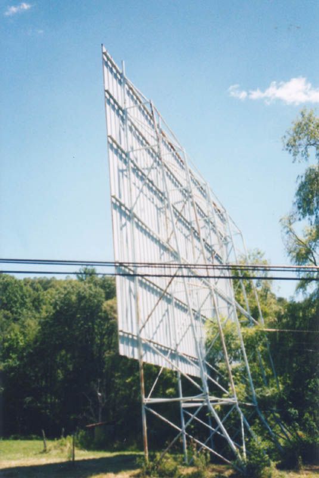

On Leatherwood Road in Belmont County stand the ruins of a small drive-in which once served the town of Barnesville. The screen is the most recognizable thing, because the marquee, as you can see below, is completely overgrown with vines. At one time you would have been able to read THE LEATHERWOOD DRIVE-IN written across it.

I really don't know how long ago the Leatherwood closed. When my then-girlfriend and I visited it in August of 2003 it was quite ruined and overgrown. One clue comes from the obituary of Helen Mary (Eddy) Hall (1917-2001). It mentions that she was once the co-owner and operator of the Leatherwood Drive-In, but it doesn't say when. According to reports I've gotten, it closed in the late 1970s.

Pictured below is the small ticket booth at the entrance to the drive-in.

And then there's the concession stand, which still has the markings from the flea market that last occupied it. What is it about drive-ins and flea markets? They projected the show from the front of the building.

Cat sends this recollection about the Leatherwood:
My cousins and I spent many Friday and Sat nights at that old drive in. I saw Billy Jack there and oh so many more movies. The only drawback to the Leatherwood was if there was a double feature playing, halfway through the second movie, fog would begin to roll in. The fog was low lying and it made for many a surreal movie experience. The drive back home to Senecaville was scary with the thick fog especially if you had just seen a scary movie.
I'd love to know more about the Leatherwood, since there is so little information available out there about it, so if you remember going to the movies there when it was still running, please e-mail me.

Ohio's Forgotten Drive-Ins
Obituary for Helen Mary (Eddy) Hall (1917-2001)
40 East Twin Drive-In
The Heath Drive-In
Hocking Theater Drive-In
Kingman Drive-In Theater
The Lake Drive-In
The Leatherwood Drive-In
The Linden Air Drive-In
The Show Boat Drive-In
The Skyline Drive-In

Back